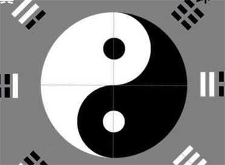

From Greed and Fear to Curiosity: The Deeper Engine of Choice
Conventional behavioral economics frames decision-making as a tug-of-war between greed and fear. Choice Potential Theory proposes that curiosity is not a third force competing alongside them, but a more fundamental drive that emerges once greed and fear have been processed and integrated. The theory distinguishes between I-type curiosity — exploration driven by intrinsic pleasure — and D-type curiosity — a deprivation-driven search that is, at its core, just greed wearing a different mask.
Wei Ji (未济): Not Yet Complete
This leads to the concept of "Wei Ji" (未济), drawn from the I Ching hexagram meaning "not yet complete." Wei Ji describes the state where old mental models have failed but awareness remains intact. It is not a breakdown but an opening. The full developmental path runs: unawareness, then awareness, then "no fault" (无咎, acceptance without self-blame), then effortless action (无为), and finally a new Wei Ji — a fresh encounter with the unknown, driven by genuine curiosity. The cycle repeats, each iteration expanding the boundary of what a person can hold.

When Two Degree-Systems Meet: The Interpersonal Dimension
Choice Potential Theory becomes especially powerful when applied to relationships. A "framework" (框架) is not an attribute any individual possesses — it is an emergent property that arises only when two or more degree-systems come into contact. The theory identifies three layers: the interaction framework, governing single encounters; the relational framework, shaping ongoing dynamics; and the self-framework, the internalized story of who you are across all your relationships.
Pseudo-Approximation and Micro-Degree Training
Several original concepts emerge from this interpersonal analysis. "Pseudo-approximation" (伪逼近) describes the pattern of substituting low-cost signals — words, gestures, promises — for the actual costly action of approaching one's boundary. It feels like growth but changes nothing. "Micro-degree training" (微度跨越训练) captures the value of early, clumsy attempts in a relationship: the awkward first conflicts, the stumbling negotiations. These small boundary-crossings are low-stakes calibration events that build the capacity for navigating larger challenges later.
Degree Synchronization
The theory also addresses "degree synchronization" (度的同步性) — the question of whether two people's boundaries are expanding at compatible rates and at symmetric cost. When one partner's growth demands far more sacrifice than the other's, the asymmetry quietly erodes the relational framework. Perhaps most provocatively, the theory observes that the same degree-management strategy can carry opposite moral meanings across different dimensions of life: disciplined boundary-holding praised in a career context may be experienced as emotional withdrawal in an intimate relationship.
Game Theory and Trust
These interpersonal dynamics connect naturally to game theory. Costly signaling explains why only expensive, hard-to-fake actions build trust. Tit-for-tat illuminates the fragile reciprocity underlying cooperation. And credible commitment — the act of deliberately narrowing your own future options — becomes the mechanism through which frameworks solidify from tentative interaction into durable bond.